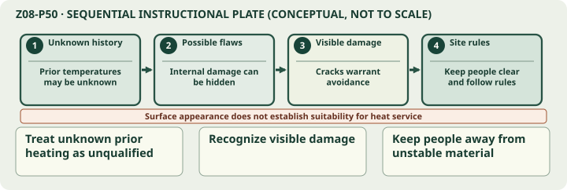

Z08-P50 · Rocks, minerals and materials · New manuscript
Thermal Embrittlement and Cracking of Heated Stone
Explain how repeated heating cycles fracture even dry-looking rocks into sharp unstable fragments.
When it applies · Fire-ring inspection and camp safety around previously burned stone.
Equipment · Visual inspection after coals are cold out.

Actions
- Recognize that different minerals inside granite, gneiss, and sedimentary stone expand at different rates when heated, generating internal tensile fractures.[R03, R13]
- Avoid stacking or stepping on heat-reddened, blackened, or craze-cracked rocks from old fire rings because they crumble sharply under weight or reheating.[R13]
- Follow Leave No Trace and agency fire-ring rules rather than pulling fresh rocks from shorelines or banks to build new stone rings.[R08, R09, R13]
Failure recognition · Reheating cracked fire-ring rocks or building new rings from shoreline cobbles causes flying hot splinters and shoreline damage.[R09, R13]
Verify · Only authorized existing agency fire grates/rings or approved stoves are used; cracked stones are left undisturbed.[R08, R13]
Stop or change course · Stop using cracked or river-sourced hearth stones and switch to an approved camp stove.[R13, C01]
Evidence and editorial notes
- C01 · Minnesota DNR · Fire Danger and Burning Restrictions (current web edition; verify at use)
- Section: Fire danger and burning restrictions map and links · Conditions: Current Minnesota location, date and jurisdiction
Support: Check current restrictions and local authority requirements before lighting.
Limitations: Restrictions can change daily with humidity, wind, and drought; verify immediately before use. · Conflicting evidence: None; local jurisdiction always supersedes general notes.
Editorial note: Mandatory legal check before any live fire card. · Specialist reviewer: Fire prevention and local land management
Primary source · checked 2026-11-24 - R03 · USGS · Collecting Rocks: Rock Classes and Mineral Property Basics (USGS GIP)
- Section: Igneous, sedimentary, and metamorphic rock classes · Conditions: Field rock class screening without laboratory petrography
Support: Observable grain interlocking, layering, bedding, or foliation helps separate broad rock classes.
Limitations: Weathered rinds and fine-grained dark rocks frequently mimic other classes visually; hand-lens inspection is preliminary only. · Conflicting evidence: None noted.
Editorial note: Establishes non-destructive classification limits. · Specialist reviewer: Field geologist
Primary source · checked 2026-11-25 - R08 · National Park Service / eCFR · 36 CFR 2.1 Preservation of Natural, Cultural and Archeological Resources (Current CFR)
- Section: 36 CFR 2.1 natural resource collecting prohibitions · Conditions: National Parks, Monuments, and federal recreation areas
Support: Collecting rocks, minerals, fossils, wood, or natural specimens is prohibited on National Park System lands unless specifically authorized.
Limitations: Rules vary across USFS, BLM, state, tribal, county, and private lands; check the governing land manager before taking any sample. · Conflicting evidence: None noted.
Editorial note: Prevents unlawful federal resource extraction. · Specialist reviewer: Public-lands resource manager
Primary source · checked 2026-11-25 - R09 · Minnesota DNR · Minnesota State Park Rules and Resource Collecting Restrictions (Current web edition)
- Section: State park natural-feature protection · Conditions: Minnesota State Parks and Recreation Areas
Support: Removing rocks, minerals, soil, or live vegetation from Minnesota State Parks is prohibited to protect natural resources.
Limitations: Verify jurisdiction boundaries before picking up specimens even along shorelines or trails. · Conflicting evidence: None noted.
Editorial note: Bounds state-park material collection. · Specialist reviewer: Minnesota DNR resource manager
Primary source · checked 2026-11-25 - R13 · National Park Service · Rocks and Minerals Geological Overview (Current web edition)
- Section: Thermal shock, moisture spalling, and rock weathering · Conditions: Porous, laminated, or water-saturated stones exposed to heat or freeze-thaw
Support: Water-saturated, porous, or layered rocks can fracture violently when rapidly heated or subjected to freeze-thaw stress.
Limitations: Dry surface appearance does not prove internal pores are moisture-free; keep unverified rocks out of fires and hot vessels. · Conflicting evidence: None noted.
Editorial note: Reinforces Z03/Z08 wet-rock spalling stop. · Specialist reviewer: Geologist and fire safety reviewer
Primary source · checked 2026-11-25
Source lineage · New manuscript (Z08 P16 material degradation) · Classification · New manuscript.